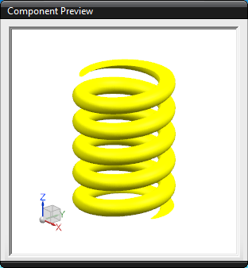
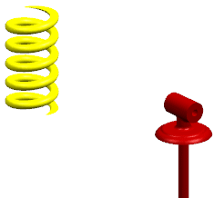

Add a deformable component from the Reuse Library
-
In the Reuse Library Navigator, select Deformable Part and expand the Member Select panel.
-
From the Member Select panel, drag the asm2_85_shock_spring into the graphic area to the left of the shock assembly.
The Assembly Constraints dialog box is displayed, but you will not constrain the spring.
-
In the Preview group, select the Preview Window check box to display the component preview.

-
Click OK to accept the location.

The deform component parameters dialog box is displayed – its title is spring Length, indicating the parameter that is eligible to be changed.
-
Change spring_length to 7, then press Enter.
-
Click OK.
The length of the spring updates.

This completes adding a deformable part from the Reuse Library.
-
Close all parts without saving.